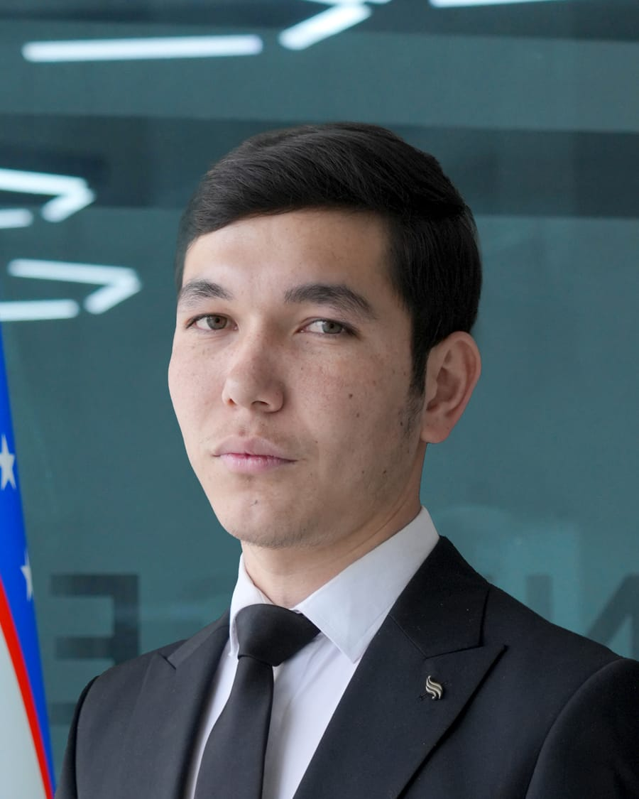

Yo'l harakatini sanovchi tizim
Kameradagi transportni turiga qarab ajratadi, yo'nalishini kuzatadi va avtomatik hisoblab boradi.
Real vaqtda video oqimidan hisobotYOLOv11ByteTrackOpenCV
Kod tez orada
AI Engineer • Educator • Builder
Men — Shavkatjon Vahobov. AI va robototexnika yo'nalishida o'qiyman, dars beraman va real loyihalar quraman. Hammasini o'zbek tilida, ochiq ko'rsatib.

02 — Ishlarim
Har bir loyihaning kodi ochiq: demo, natija va o'rnatish qo'llanmasi bilan. Kod o'qilmaydi — natija ko'riladi.
Whisper modelini o'zbek tiliga moslashtirdim. O'zbek tili uchun ochiq AI modellar deyarli yo'q — shu bo'shliqni to'ldirish uchun model va brauzerdan sinaladigan demo ochiq holda joylanadi.
Kameradagi transportni turiga qarab ajratadi, yo'nalishini kuzatadi va avtomatik hisoblab boradi.
Real vaqtda video oqimidan hisobotBuyurtma, usta, mijoz va rahbar — har biri uchun alohida oqim. Hammasi Telegram ichida, qog'ozsiz.
Buyurtmalar hisobi to'liq avtomatPromokod chiqarish, tekshirish va statistikasi. Bot, API va veb-panel bitta tizimda birlashgan.
Bot + API + sayt — bir loyihadaChiziq bo'ylab yuruvchi va musobaqa uchun sumo robot: sxema, kod va jonli video.
Musobaqada sinovdan o'tganTelefon va qurilma o'rtasida BLE aloqa: masofadan boshqarish va ma'lumot uzatish.
Simsiz, ilovadan boshqariladiYangi loyihalar har oy qo'shiladi — kuzatib boring.
03 — Nima qila olaman
Har bir yo'nalish bo'yicha tugallangan, ishlab turgan loyiham bor.
Kameradagi obyektlarni aniqlash, sanash va kuzatish. Yo'l harakati, xavfsizlik, ishlab chiqarish nazorati.
Ovozni matnga o'girish, transkript va modelni o'zbek tiliga moslashtirish. Bu yo'nalishda raqobat deyarli yo'q.
Buyurtma qabuli, CRM, to'lov va promokod tizimlari. API dan serverga chiqarishgacha to'liq.
Sensor, motor, simsiz aloqa — g'oyadan harakatlanadigan qurilmagacha. Dars va musobaqa loyihalari.
Bepul
Qayerdan boshlash, qanday tartibda o'rganish va birinchi loyihani qanday qilish — bitta PDF, aniq qadamlar bilan. Botga yozing, darhol yuboriladi.
PDF tez orada04 — Blog
Google'da qidiriladigan savollarga o'zbek tilida to'liq javob. Oyiga 2 ta chuqur maqola.
05 — Aloqa
Buyurtma, hamkorlik va dars bo'yicha to'g'ridan-to'g'ri yozing. Odatda bir kun ichida javob beraman.
O'rgan. Qur. Qo'lla.